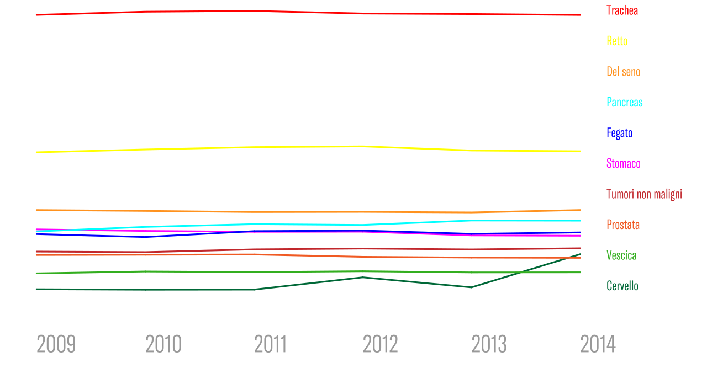

DI COSA BISOGNA AVERE PAURA
Durante il corso della nostra vita siamo "addestrati" a temere una miriade di eventi e oggetti (nonchè persone) dannose alla nostra incolumità, a munirci e a prevenire quelle che sono le possibili disgrazie future che possono incombere in ognuno di noi, laddove la negligenza, o semplicemente la sfortuna, la fanno da padrone. Vivere con il timore che questi "incidenti" possano anche solo percorrere la nostra stessa strada è insito in ognuno di noi, a livello genetico, fin dentro i cromosomi ed oltre la nostra stessa immaginazione. Ma quali sono le paure remote degli uomini, in particolar modo in quest'ambito moderno? Soffermandoci sui campioni italiani, abbiamo che
0
%teme che la CORRUZIONE POLITICA possa plasmare e rovinare il tenore di vita proprio e di tutti gli altri cittadini. Cosa si intende per "corruzione politica"? La corruzione politica è un fenomeno invisibile agli occhi comuni, impercettibile quanto la mano invisibile di Adamn Smith, con l'unica differenza che si appoggia al mondo con le sembianze di un pugno, risucchiando e rompendo le leggi sui cui faceva fronte, idealmente o meno... uno dei pochi casi in cui il sasso batte la carta! La corruzione, possiamo dire, è un comportamento della persona che abusa della sua posizione di fiducia per ottenere un indebito vantaggio, un guadagno privato. Arricchendo un singolo individuo a discapito dell'intera città fa sì che gli investimenti scarseggino, gli appalti siano "montati" con materiali a basso costo. Questo causa una diretta riduzione dell'interesse da parte dei finanziatori, poichè lo stato in questione perde di credibilità economica e, essendoci meno investimenti, il lavoro comincia sempre più a mancare. Solo per intenderci, la corruzione in Italia, nel 2011, è costata ben 60 miliardi circa a tutta la nazione.
0
%è soggettato dalle TASSE. Secondo quanto riporta il giornalista Antonio Carnevale, ogni italiano versa al fisco circa 8.300 euro all'anno. Pare già incredibile così, considerando gli stipendi mensili di ogni cittadino (nel 2018, il registro statistico annota 1.570 euro medio)... figuriamoci quando le spese subiscono variazioni in crescendo! La paura di non arrivare a fine mese tra affitto, cibo e quant'altro, è di sicuro una delle preoccupazioni massime, la quale costringe i molti a "mangiarsi la foglia" a favore delle ingenti spese continue a cui vengono questi sottoposti.
0
%degli italiani tiene conto dell'IMMIGRAZIONE. Oltre ai giudizi xenofobi nei riguardi di questi enti provenienti da usi e costumi esterni, il rischio di sovrappopolamento non è un fattore esiquo come può sembrare. Più bocche da sfamare, specie se residenti clandestine, sono difficili da accontentare e, spesso e purtroppo, si arriva immancabilmente ad un incremento del tasso di criminalità. Da quanto riportato da "Il Foglio", i costi di accoglienza sono cresciuti da 300 milioni circa, nel 2011, a più di 3 miliardi, nel 2017.
0
%infine, risente di una delle questioni più fragili e toccanti, quale il LAVORO E LA DISOCCUPAZIONE. Essendo già gettati quantomeno nell'idea del lavoro già da piccoli, il timore di non riuscire a diventare ciò che si è prefissati di fare o peggio, di non avere neanche un lavoro, scuote la mente di ogni cittadino, giovane o vecchio che sia. I fattori analizzati precedentemente confluiscono fondamentalmente in questa tematica e ne variano l'andamento: l'immigrazione incrementa il lavoro in nero e la diminuzione di quello preesistente, le tasse e il costo medio della vita impediscono ai molti di studiare e la corruzione politica indebita sempre più e sperpera denaro utile a infrastrutture e quant'altro. Quindi, questo è la sintesi per intenderci e, dopotutto, la forza motrice di uno stato... il lavoro. Senza di esso, indipendentemente dai vari fattori, una città, una regione, una nazione morirebbe sul nascere. Molte menti si sono mosse verso l'esterno, richiedenti campo per le proprie esigenze.
MA LA PAURA
È UN'ALTRA
Purtroppo, di fronte a questo reale problema, trascurato ma pur sempre vigile, soporifero per quanto sia profondo, ogni cosa cessa di esistere e perde importanza: d'altronde, nulla è più importante della vita stessa, specie quando viene contestualizzata. Mi riferisco ai tumori e al cancro. Ahimè, è difficile rendersi conto, quando per esempio si sta fumando qualche sigaretta per alleviare i dolori che sorgono leggendo la bolletta della luce (o che altro so, le tasse universitarie, eccetera), che quel gesto ci avvicina sempre pìù alla morte e che, appunto, persino guadagnare quell'ultima moneta non varrebbe più nulla. Nonostante sia un veleno così lento e indolore, graduale nel tempo, in Italia si diagnostica oltre
0
nuovi casi di cancro e ben oltre
0
nuove diagnosi di tumore, di cui il
0
% intacca la popolazione di genere maschile mentre il
0
% quella femminile
COSA SONO IL TUMORE E IL CANCRO?
Una neoplasia (dal greco νέος, nèos, «nuovo», e πλάσις, plásis, «formazione») o un tumore (dal latino tumor, «rigonfiamento»), indica, in patologia, «una massa di tessuto che cresce in eccesso ed in modo scoordinato rispetto ai tessuti normali, e che persiste in questo stato dopo la cessazione degli stimoli che hanno indotto il processo», come chiarisce la definizione coniata dall'oncologo Rupert Allan Willis, accettata a livello internazionale (fonte: wikipedia). I tumori si dividono in benigni e maligni (questi ultimi chiamati comunemente "cancri"). Le cellule dei tumori benigni si sviluppano lentamente e non hanno la capacità di diffondersi ad altre parti dell’organismo, anche se possono creare problemi alla salute. I tumori maligni, invece, sono composti da cellule che, senza un adeguato trattamento, possono invadere i tessuti circostanti. Inoltre, hanno la capacità di espandersi a distanza, ovvero al di fuori della sede di insorgenza del tumore primitivo (fonte: fondazione "insieme contro il cancro").
TASSO DI MORTALITÀ PER TUMORI

MORTI DI CANCRO ANNUI
33.000
19.000
Tumori maligni di colon e retto
13.000
Tumori maligni del seno
11.000
Tumori maligni del pancreas
10.000
Tumori maligni del fegato
10.000
Tumori maligni dello stomaco
9.000
Tumori non maligni
7.000
Tumori maligni della prostata
5.000
Tumori maligni della vescica
3.000
Tumori maligni del cervello e del SNC
Cancro: la prevenzione
La prevenzione è la migliore arma per vincere il cancro ed è a nostra portata ogni giorno: basta non iniziare a fumare, o smettere al più presto, seguire un’alimentazione equilibrata e salutare, praticare sport e sottoporsi periodicamente a controlli medici.
8 Regole per prevenire i tumori
1. Smettere di fumare:
Secondo il Ministero della Salute, il numero delle vittime della
sigaretta in Italia ogni anno va da 70.000 a 83.000 persone (fonte: AIRC)
2. Ridurre il consumo di alcolici:
Lo IARC, che si occupa anche della valutazione degli
effetti degli agenti chimici e fisici sul rischio di cancro, ha infatti classificato l'alcol
come agente cancerogeno fin dal 1988. Sempre più ricerche hanno chiarito il legame
tra alcol e numerose forme tumorali: quello della bocca, della faringe, dell'esofago,
della laringe, del seno, del colon, del fegato, del pancreas.
3. Seguire la dieta mediterranea
Essa consiste in un largo utilizzo di cereali, pasta,
pane, ortaggi di stagione e legumi; un frequente impiego di pesce, latticini e
formaggi; un consumo razionale di olio d'oliva, frutta, uova e frutta oleosa, carni
bianche; infine, un consumo limitato di grassi di origine animali, carni rosse, uova
4. Controllare il peso:
L’elevata assunzione di grassi costituisce importanti fattori di
rischio da evitare. È dimostrato che persone con un peso superiore del 40% rispetto
a quello consigliato, presentano tassi più elevati di mortalità per cancro del colonretto, della prostata, dell’utero, della cistifellea e della mammella.
5. Fare attività fisica:
Chi svolge una vita sedentaria infatti ha circa il 20/40% di rischio
in più di ammalarsi
6. Fare attenzione alle malattie sessualmente trasmissibili:
Utilizzare dunque metodi
contraccettivi per evitare infezioni, i quasi possono aprire la strada al papilloma virus
oppure all'epatite, durante i rapporti.
7. Evitare l'uso di sostante dopanti:
Il rischio più consueto è l'eccessiva densità del
sangue che può portare a infarto, ischemia e ictus; inoltre sono possibili leucemie e
nefriti.
8. Evitare l'uso di lampade e controllare nei e noduli:
Il principale fattore di rischio per
il melanoma cutaneo è l'esposizione eccessiva alla luce ultravioletta, che arriva fino a
noi sotto forma di raggi UVA e UVB, ed è principalmente veicolata dai raggi del sole.
Esporsi troppo al sole rappresenta un pericolo, perché può danneggiare il DNA delle
cellule della pelle e innescare la trasformazione tumorale. È importante ricordare che
anche le lampade e i lettini solari sono sorgenti di raggi ultravioletti e devono quindi
essere utilizzati con estrema attenzione e senza abusarne (fonte: AIRC)
Punti di accoglienza
Ogni anno quasi 800mila italiani colpiti dal cancro cambiano regione per curarsi, perché costretti oppure perché ritengono, spostandosi, di accedere a una migliore qualità e organizzazione della cura. C’è tra questi chi raggiunge regioni limitrofe e rientra a casa in giornata, perché è in r egime di day hospital, per esempio, o perché si sposta solo per una visita. Ma una quota si allontana per terapie o interventi che richiedono tempo: giorni o anche settimane, e più volte l’anno.
Principali punti di accoglienza
- Avellino
- Aviano
- Baghera
- Bari
- Benevento
- Carpi
- Genova
- L'Aquila
- Milano
- Mirandola
- Monserrato
- Napoli
- Padova
- Paola
- Pavia
- Pavullo del Frignano
- Perugia
- Pescara
- Peschiera del Garda
- Pozzilli
- Rionero in Vulture
- Rozzano
- San Giovanni Rotondo
- Sassuolo
- Terni
- Torino
- Trieste
- Verona
- Vignola
LA MORALE:
Detto questo, spero il messaggio sia chiaro e diretto: prima di tutto, gli uomini sono tenuti a tutelare la vita, e niente è più importante di essa. Sarà pure un messaggio banale e scontato, ma è bene ricordare le basi. Se il denaro non è in grado di preservare la nostra vita, bensì la ostacola, a che serve dunque? Le tasse sono sicuramente un grosso problema, come anche la corruzione politica e quant'altro... ma purtroppo sono paure che rimarranno tali poichè sempre nell'ombra. Positivamente parlando, le vicissitudine come queste, che ci riguardando relativamente e indirettamente, possono pur sempre migliorare, con aiuti esteri o meno, ma il cancro ancora oggi non ha una cura, perciò merita più di altro attenzione, affinchè ogni uomo rimanga in vita, poichè è un suo diritto imprescutabile, a discapito del sovrappopolamento, a discapito della fame, a discapito del suo stesso diritto.
SIAMO CIÒ CHE MANGIAMO
CIÒ CHE CREDIAMO
E CIÒ CHE PENSIAMO
a.b.